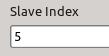
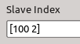

Common EtherCAT slave options
Many slave options are common for all slaves. In this section the
following options are discussed:
Master
A numeric scalar representing the master that the slave is
connected to.
Slave Index
A slave can be identified by its absolute position in the EtherCAT
bus or by its position relative to another slave.
The absolute position counter is incremented with every slave
starting from zero with the first slave. If the bus topology changes,
a slave's absolute position will be affected if the change was closer
to the master.
Slaves can also be addressed relative to each other. For this
purpose, a slave's alias is used. This alias is a number that is
permanently stored in a slave's non-volatile memory (see the
ethercat alias command). Thus it is possible to identify a
slave even after a power reset.
Every time a slave with an alias is encountered during bus
scanning, the alias counter is reset. Subsequent slaves can be
addressed relative to this one.
To enter an absolute address, simply enter the slave position as a
numeric scalar. A relative address is entered as a vector
[alias position].
Example:
The ethercat slaves command can be used to show all
slaves attached to a master device:
user@host:~$ ethercat slaves
0 0:0 OP + EK1101 ...
1 0:1 OP + EL4004 ...
2 0:2 OP + EL2624 ...
3 100:0 OP + EL4004 ...
4 100:1 OP + EL2624 ...
5 100:2 OP + EL1144 ...
6 100:3 OP + EL2624 ...
In column 1 the slave's absolute position is shown. Column 2 shows a
slave's relative addressing using the alias. Slave 3 has an alias of
100 set.
The slave at absolute position 5 (EL1144) can also be addressed
relative to slave 3 that has an alias set. In this case, its address
is [100 2]. This relative address will not change if slave
at position 2 (EL2624) is removed, for example. It will obviously
change if slave 4 is removed.
Examples of addressing slave 5 in the block's mask:
| Absolute Addressing: |
 |
| Relative Addressing: |
 |
Device Model
Select a device from the drop down list.
Vector Inputs/Outputs
Checking this option groups the block's inputs and/or outputs to fewer
ports.
Sample Time
Choose the slave's sample time.
| -1 | Inherited sample rate |
| 0 | Continuous sample rate |
| T | Discrete sample rate with period T |
Data exchanged with slaves is organized in groups called domains. By
default, all slaves in the same sample time are together in one
domain.
To place one or more slaves in a domain of their own, enter a
vector for the sample time, the second element being the domain
identifier, a number greater than zero, e.g. [-1 10]. All
slaves with this sample time and domain identifier will be in the same
domain.
Advanced topic: If you are careful, you can even create an input
or output domain exclusively using this technique. This is required in
the rare occasion that a slave cannot cope with an IO domain that has
both input and output data.